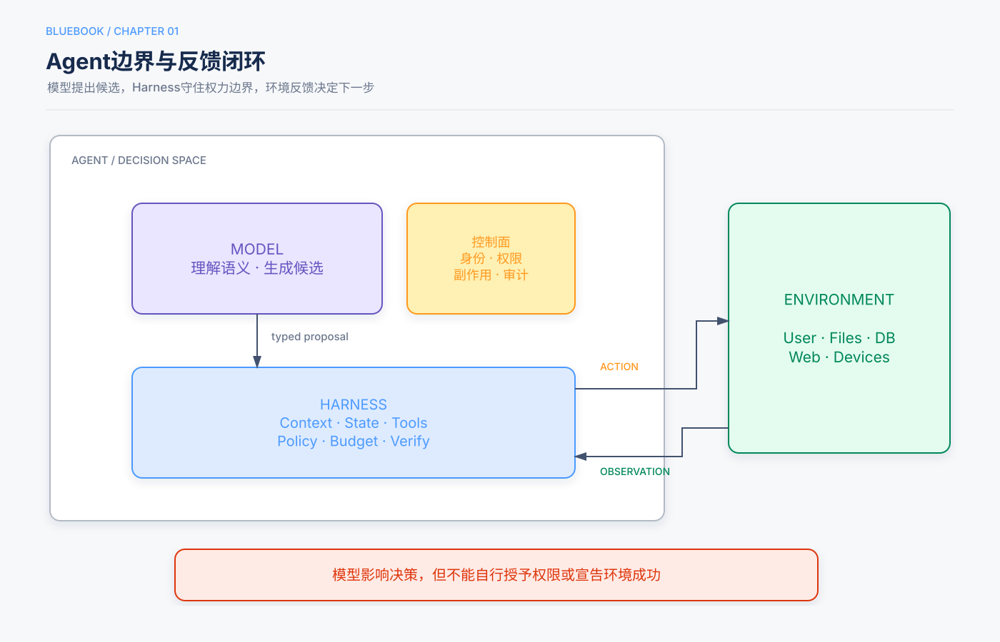

第1章 定义、边界与产业演进¶
Release Candidate 1
本章定位：建立全书唯一的Agent定义，并划清Model、Harness与Environment边界。
本章回答的三个问题¶
- AI Agent与普通模型应用的本质区别是什么？
LLM + 上下文 + 工具如何形成闭环？- 为什么模型越强，Harness仍然重要？
5分钟速读¶
- Agent不是会聊天的模型，而是能够依据观察选择行动、获得环境反馈并持续推进目标的系统。
Agent = LLM + 上下文 + 工具描述Agent边界内的实现组件；Environment位于边界之外。- Model负责语义决策，Harness负责上下文、工具接口、状态、约束、验证和纠正。
- 许多产品能力提升来自观察空间和动作空间的扩展，而不只是替换更强模型。
- 生产系统必须把权限、状态、事实、预算和不可逆副作用留在确定性代码中。
- Harness不是对模型能力的否定，而是模型当前能力边界的工程补偿。
一、统一定义¶

AI Agent是：
能够依据当前上下文选择行动，通过受控工具与环境交互，并在预算和终止条件内持续推进目标的系统。
与普通生成应用相比，它多了三个要素：
- 模型需要在多个可能行动中作选择；
- 行动会读取或改变外部环境；
- 环境反馈会影响下一步，而不是一次生成后结束。
二、三种理解层次¶
| 层次 | 组成 | 解释 |
|---|---|---|
| 直觉 | 大脑 + 眼睛 + 手脚 | 思考、看见、行动 |
| 工程 | LLM + Context + Tools | 决策内核、当前信息、交互接口 |
| 控制 | Policy + Observation/History + Action Interface | 根据观察选择行动并接收反馈 |
这些映射用于建立直觉，不是严格等式。上下文只是当前观察和历史在模型侧的表示；工具背后的文件、数据库、网页和设备仍属于环境。
三、Agent与Environment¶
Environment包括：
- 用户和其他Agent；
- 文件、数据库和业务系统；
- 网页、浏览器和手机界面；
- 代码执行器与测试环境；
- 机器人、传感器和仿真世界。
Agent只能看到通过观察通道进入上下文的信息，也只能执行工具接口允许的动作。因此，能力建设经常是在重新设计观察空间和动作空间。
四、Model与Harness¶
Model负责¶
- 理解自然语言目标；
- 处理歧义；
- 规划和候选分解；
- 选择工具与参数；
- 根据观察调整策略。
Harness负责¶
- 构造每次调用的上下文；
- 暴露当前身份允许的工具；
- 校验模型输出；
- 维护状态与轨迹；
- 执行权限、预算和终止；
- 验证环境结果；
- 在失败时重试、恢复、改道或升级人工。
架构边界
模型可以建议“退款128元”，但订单是否存在、金额是否符合政策、用户是否有权、是否需要审批以及退款是否成功，都由Harness和环境系统判断。
五、观察空间与动作空间¶
5.1 观察不足¶
如果Agent不知道当前时间、用户权限、已有任务状态或工具失败原因，它会在错误信息上作出看似合理的判断。解决方案通常不是要求模型“更仔细”，而是把必要状态以可信形式提供给它。
5.2 动作不足¶
如果Agent只能生成文字，它不能真正完成查库、发信、改文件或运行测试。增加工具会扩展能力，也扩大风险；工具必须以最小权限和可验证结果为设计目标。
5.3 产品演进的共同轨迹¶
- 搜索Agent通过网页检索扩大观察空间；
- Coding Agent通过文件系统和执行器扩大观察与动作空间；
- Computer Use把GUI变为观察和行动接口；
- 语音和事件驱动系统扩展了交互模态与触发时机；
- 本地Agent把观察空间延伸到用户授权的设备和文件。
这些产品案例用于说明接口演进，不意味着所有系统都应拥有完整权限集合。
六、ReAct：最小闭环¶
trajectory = [user_goal]
while budget.remaining():
context = harness.build_context(trajectory)
decision = model.decide(context)
if decision.is_final:
return harness.verify_completion(decision)
call = harness.validate_and_authorize(decision.tool_call)
observation = environment.execute(call)
trajectory.extend([decision, observation])
return BudgetExhausted()
真实系统还必须处理并行调用、Checkpoint、审批、超时、取消和恢复。这个骨架只说明：模型选择行动，Harness校验，环境产生观察，循环由验证和预算终止。
七、Agent如何学习和变化¶
能力变化发生在三个时间尺度：
- 任务内上下文适应：证据和状态进入上下文，立即改变当前行为；
- 跨任务外部产物更新：知识、Prompt、Skill、程序和Harness被版本化更新；
- 模型参数更新：通过SFT、RL或蒸馏内化高维能力。
应优先选择最可审计、最容易验证的载体。能写成确定性规则的，不急于训练进参数；能通过检索提供的，不必永久塞进Prompt。
八、为什么Harness不会立即消失¶
模型会逐步内化工具调用、规划和自我纠错能力，但生产业务持续产生新的规则、权限、数据和风险。Harness的职责会变化，却不会因模型更强就自动消失：
- 模型今天做不稳的，Harness先补上；
- 模型内化一层后，Harness卸下一层启发式；
- Harness继续承担身份、授权、状态、审计和不可逆副作用控制。
这也是“方向上相信模型扩展，节奏上坚持工程验证”的含义。
九、常见失败模式¶
| 失败 | 根因 | 改进 |
|---|---|---|
| 有答案但未完成 | 把文本当作环境结果 | 独立完成验证器 |
| 重复调用工具 | 丢失历史或状态 | 类型化状态与轨迹 |
| 越权操作 | 模型决定授权 | 策略网关与最小权限 |
| 无限循环 | 无硬预算和终止 | 代码级预算、终态 |
| 幻觉事实 | 缺少权威观察 | RAG或实时查询 |
| 工具成功但业务失败 | 未验证最终状态 | 查询权威系统闭环 |
十、检查清单¶
- [ ] 系统是否真的需要根据环境反馈动态选择行动？
- [ ] Agent内部与Environment边界是否清楚？
- [ ] Model和Harness职责是否分离？
- [ ] 观察和行动接口是否最小充分？
- [ ] “完成”是否由环境事实验证？
- [ ] 权限、状态、预算和副作用是否由代码控制？
知识检查¶
- 为什么Environment不属于
LLM + Context + Tools公式内部？ - 观察空间不足与模型能力不足如何区分？
- Harness中哪些职责不应交给模型？
- Agent能力变化的三个时间尺度分别是什么？
来源与证据¶
主要来源为主仓库引言和第1章、实验1-1，以及补充仓库Lesson 01和03。ReAct机制参考Yao等人的论文；实验边界以chapter1/EXPERIMENT_LEDGER.md为准。